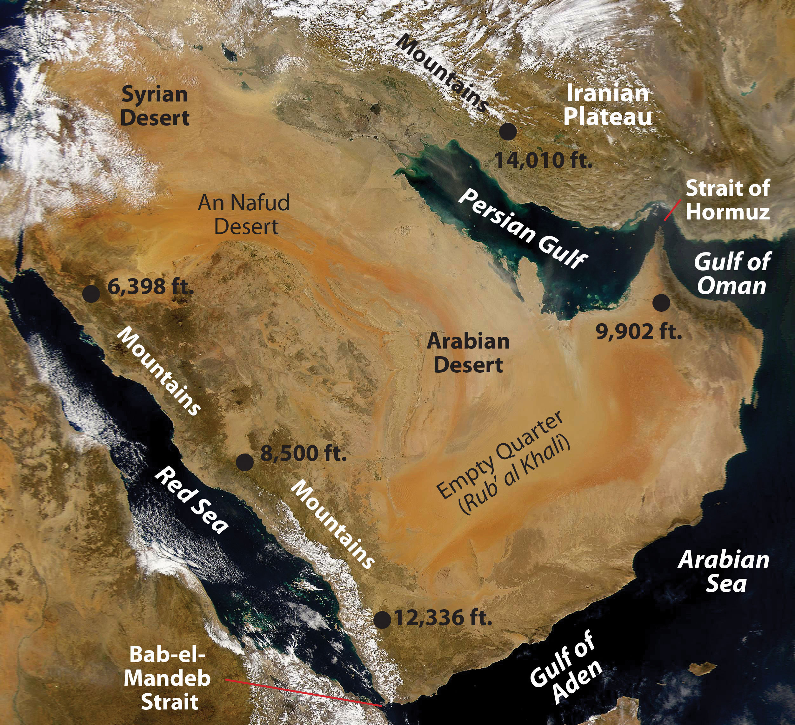
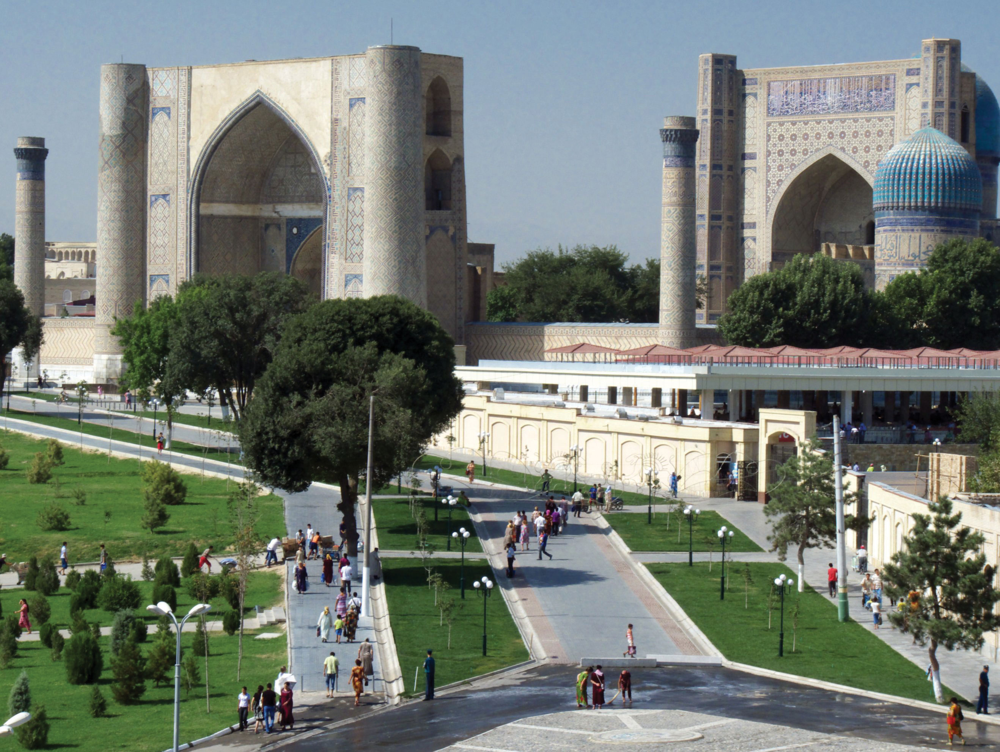
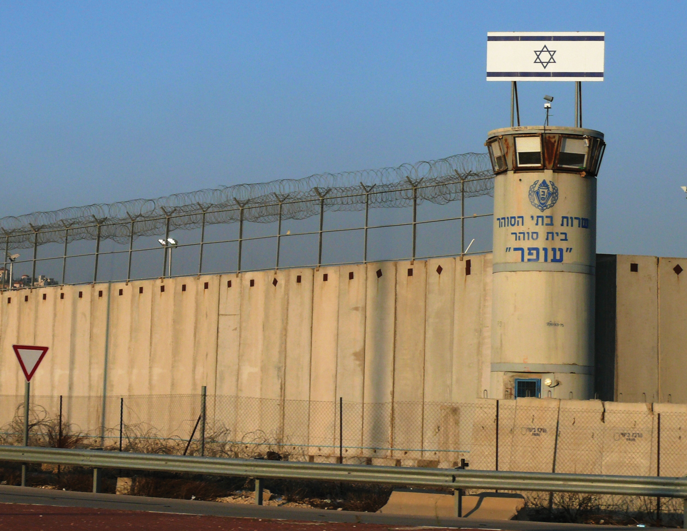
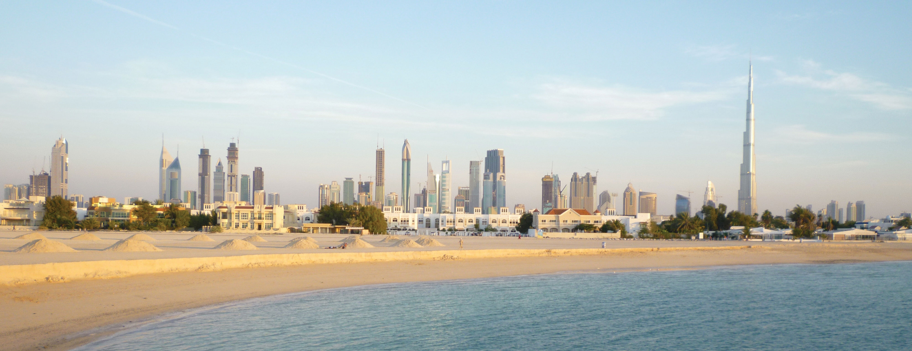
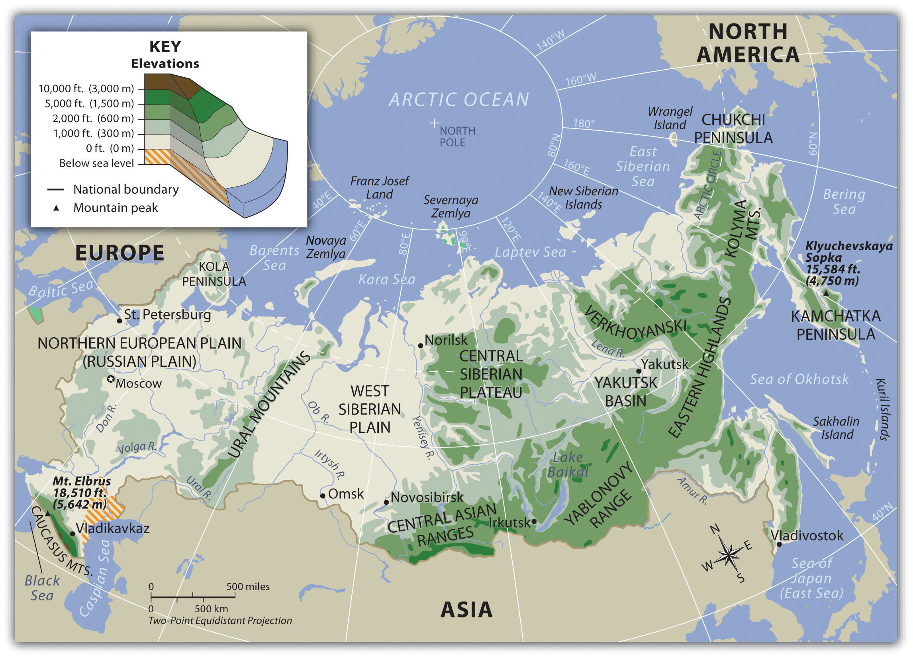

At a Glance
At a Glance
Learning Outcomes
- Describe: How aridity and exotic streams shape settlement patterns.
- Understand: The region as a global Cultural Hearth for monotheism (Judaism, Christianity, Islam).
- Analyze: The geopolitical power of oil reserves and OPEC.
- Evaluate: Solutions to water scarcity (desalination, dams) and their conflicts.
- Apply: Geographic concepts to strategic chokepoints like the Suez Canal.
Key Terms
Cultural Hearth, Exotic Stream, Desalination, OPEC, Chokepoint, Fertile Crescent, Monotheism, Arab Spring, Maghreb.
Stop & Check
Reveal Answer
Common Misconception
Myth: "Arab," "Muslim," and "Middle Eastern" all mean the same thing.
Fact: Arab is a linguistic/cultural identity. Muslim is a religious identity. The region includes many non-Arab groups like Persians (Iran), Turks (Turkey), Kurds, and Jews (Israel).
Regional Snapshot: The MENA Realm
The region of North Africa and Southwest Asia (MENA) is a world of stark contrasts. It is the cradle of agriculture and three major monotheistic religions, yet it also hosts some of the most hyper-modern cities on the planet. Geography here is defined by the absolute necessity of water management.

Interactive Map: The Crossroads of Three Continents
Explore the strategic chokepoints of the Bosporus, the Suez Canal, and the Strait of Hormuz. Click on historical nodes like Cairo and Jerusalem to understand their enduring spatial significance.
Toggle between Physical terrain and Political boundaries. Notice the "Exotic Streams" like the Nile and Euphrates that bring life to the desert.
Physical Geography: Aridity and Adaptation
Aridity is the defining physical characteristic of this region. The Sahara Desert and the Arabian Desert dictate the patterns of human settlement, forcing populations to cluster near water sources.


The region's rivers, such as the Nile and the Tigris-Euphrates, are Exotic Streams - they originate in humid highlands and flow through arid regions, making them the most valuable geographic assets in the world.
Geographic Inquiry
Nations like the UAE and Saudi Arabia are investing billions in Desalination technology. While this provides fresh water, how does the resulting high-salinity brine impact the local marine geography of the Persian Gulf?
Human Geography: Cultural Hearths and Oil Wealth
This region is a primary Cultural Hearth, the birthplace of urban life and the three major monotheistic religions: Judaism, Christianity, and Islam. The cultural landscape is marked by sacred sites, historic bazaars, and modern minarets.


Key geopolitical issues include the influence of OPEC on global energy markets and the persistent territorial conflicts rooted in historical claims and resource competition.
Data Exploration: Oil Reserves in MENA
The uneven distribution of oil reserves is the defining geographic feature of this region. These seven nations control over 50% of the world's proven oil reserves, creating vast wealth disparities and intense geopolitical competition.
Interpretation: Notice the stark difference between Saudi Arabia (268B barrels) and countries like Qatar (26B barrels). This creates radically different economic opportunities and foreign policy alignments. Why do you think some oil-rich nations (like UAE, Qatar) have become more globally influential despite having fewer reserves?
The Nile River: Water Geopolitics
The Nile is the lifeblood of Egypt, but its headwaters lie in Ethiopia. The construction of the Grand Ethiopian Renaissance Dam (GERD) has created a major geographic conflict. Ethiopia seeks to use the water for hydroelectric power to drive development, while downstream Egypt fears a reduction in the water flow necessary for its very survival.
Questions to Consider:
- Is the Nile a formal, functional, or perceptual region in this context?
- How can "Upstream" and "Downstream" geographic positions lead to seemingly irreconcilable political demands?
- Exotic Stream
- A river that rises in a humid region and flows through an arid region, with its volume decreasing toward the mouth.
- Desalination
- The process of removing salt and other minerals from saline water to produce fresh water.
- OPEC
- Organization of the Petroleum Exporting Countries, an intergovernmental organization of 12 nations.
- The region is characterized by extreme aridity, making water the most strategic and contested resource.
- MENA is a global cultural hearth, shaping the development of monotheistic religions and early urbanism.
- The global economy is deeply tied to the region's vast energy reserves, creating intense geopolitical interest.
Negotiating the Nile: A Water Crisis Summit
The Nile River is the lifeblood of northeastern Africa, but its waters are shared, and contested, by 11 nations. Ethiopia has built the Grand Ethiopian Renaissance Dam (GERD), the largest hydroelectric dam in Africa. Egypt, which depends on the Nile for 97% of its freshwater, sees this as an existential threat. You are attending an emergency summit to negotiate a water-sharing agreement.
Role A: Egypt
Your 100 million people depend almost entirely on the Nile. You demand guaranteed minimum water flows and veto power over dam operations during droughts. You consider this a matter of national survival.
Role B: Ethiopia
You are building the dam to provide electricity to 60% of your population who lack power. You argue that upstream nations have the right to develop their own resources and lift their people out of poverty.
Role C: Sudan
You are caught between your two neighbors. The dam could actually benefit Sudan by regulating floods and providing cheap electricity, but you fear being pressured by both sides.
Role D: UN Mediator
You must craft a compromise that all parties can accept. You have access to climate data showing the Nile's flow is already declining due to climate change, making the stakes even higher.
Discussion and Reflection Prompts
Reflect on Your Learning
- Water as Power: Why is water described as "the oil of the 21st century" in MENA? How does control over water resources translate into political power?
- Cultural Hearth: This region gave birth to three major world religions. How does this shared religious heritage both unite and divide the region today?
- Rentier States: How does oil wealth change the relationship between a government and its citizens? What happens to these states when oil revenues decline?
Discuss With Your Peers
- Is desalination a sustainable long-term solution to water scarcity, or does it create new environmental problems? What role should technology play in solving geographic challenges?
- The Arab Spring showed that geographic factors (urban concentration, youth bulge, food prices) can trigger political revolutions. Can you identify similar geographic conditions in other world regions?
- How does the concept of "exotic streams" (rivers like the Nile and Tigris-Euphrates that flow through deserts) make entire civilizations vulnerable to upstream decisions?
Data Exploration: Oil Production vs. Human Development
Does oil wealth translate into human development? Compare oil production (barrels per day, millions) against HDI scores for selected MENA nations. The relationship is more complex than you might expect, revealing the "resource curse" paradox where some of the world's richest oil producers have surprisingly low human development scores.
Interpretation: Notice that the UAE and Qatar have high oil production AND high HDI, while Iraq and Libya have high production but lower HDI. What geographic, political, and historical factors explain why oil wealth benefits some populations more than others?
Knowledge Check
Test your understanding of the core concepts covered in this chapter. This quiz consists of multiple-choice questions designed to review key terms, regional patterns, and geographic relationships. Select the best answer for each question to receive immediate feedback.
Loading quiz questions...
Curriculum Standards Alignment
This chapter aligns with the following National and State geography standards.